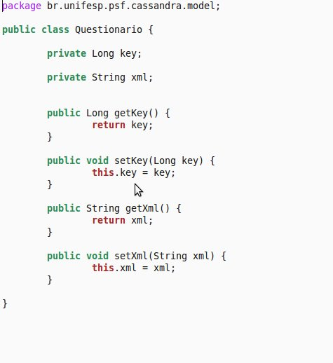
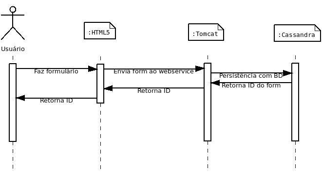
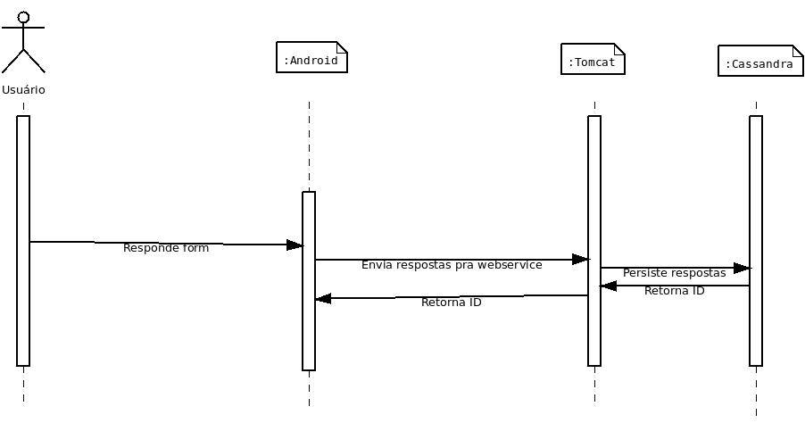

Cassandra
A componente
Essa componente teve como objetivo disponibilizar um cluster de servidores de persistência NoSQL capazes de replicação de dados e balanço de carga automático. O serviço de persistência é integrado ao sistema através da componente Tomcat, única componente com acesso direto à interface da Cassandra.
NoSQL
Classe de Banco de dados não relacional, não tem as garantias ACID (Atomicidade, Consistência, Isolamento e Durabilidade) e esquema de tabela fixa, não suporta instruções e operações de junção SQL e apresentam escalabilidade horizontal.
Cassandra
Repositório de dados feito em java altamente escalável, eventualmente consistente (update propagado durante um período de não atualizações). Inicialmente desenvolvido pelo Facebook (por Avinash Laksman e Prashant Malik), foi tornando open source em 2008 para melhorias, atualmente mantido pela Apache e colaboradores. Reúne a arquitetura Dynamo, da Amazon e um modelo de dados baseado no BigTable, do Gooble.
Utiliza clusterização descentralizada (não há nó mestre), elasticidade (leitura e escrita de forma linear) e é tolerante a falhas.
Mapeamento
Para agilizar e facilitar a criação, o acesso e a inclusão de dados foi disponibilizada uma interface para a persistência de cada tipo de dado. Um tipo de dado pede uma implementação de classe java que encapsule os dados desejados para persitência.

Cluster
Como dito em Cluster, mas para o Cassandra foram usadas duas máquinas:
- Kay2, IP: 172.20.9.143;
- Kay3, IP: 172.20.9.144;
Casos de uso
Imagine um professor que queira fazer um estudo socio-econômico anônimo de uma classe do ensino médio. Usando seu notebook em casa, ele prepara os questionários e os grava .
Estudantes respondem a um formulário carregado na componente Android em celulares. E nosso querido professor persiste os dados mais tarde.
Código
CassandraDaoSuport.java
Encapsula toda a interface para manuseio do banco.CassandraDaoSuport